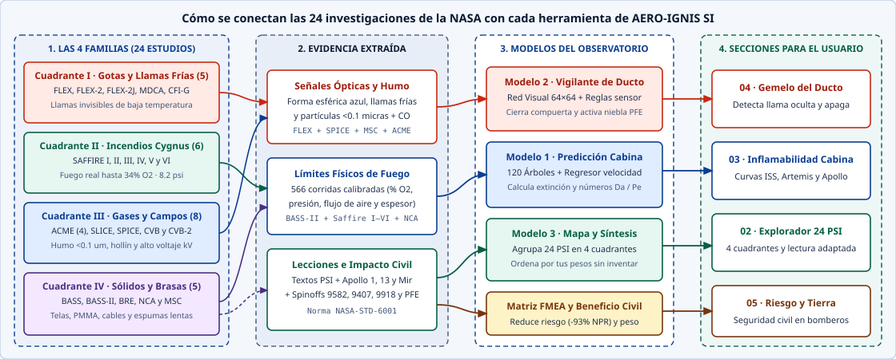
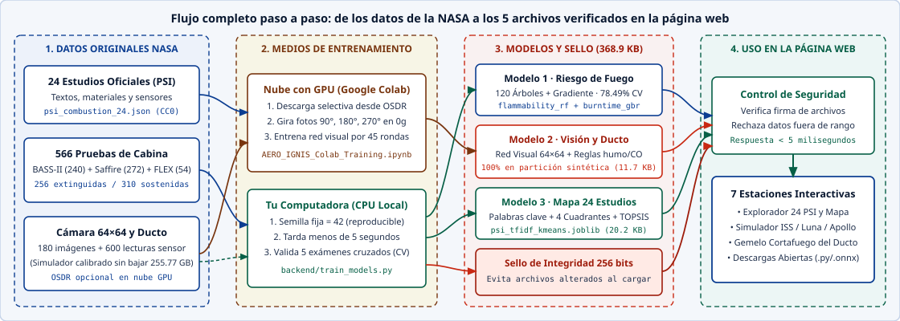
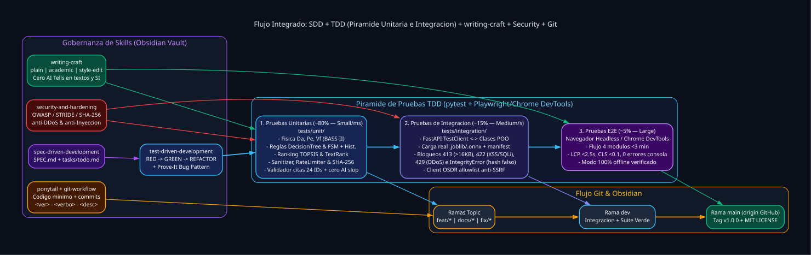

NASA Space Apps 2026 — Flame in Freefall · Sinergia Mecatrónica/Control + Gestión Industrial sobre 24 datasets PSI y arquitectura Ponytail/SDD.
| OK | ID | Dimensión | Prioridad | Requerimiento & Alcance | Responsable | Criterio de Verificación |
|---|
De 133 investigaciones totales en NASA PSI, exactamente 24 pertenecen a Combustion Science (licencia CC0-1.0, DOIs 10.60555, estructura ISA-Tab: i_investigation.txt → s_study.txt → a_assay.txt).
BASS-II (PSI-25 · 17 cols · >130 corridas): Sample Number | Material | Thickness | Width | Length | Air Flow (cm/s) | Flow Direction | Percent O2 | Percent N2 | Pressure (atm) | Total Flow Rate (cc/s) | Ignition Power (W) | Ignition Duration (s) | Burn Time (s) | Camera 1 ID | Camera 2 ID | Extinguished
Saffire-I (PSI-98 · 13 cols · 11.41 GB): Sample Number | Material | Thickness | Length | Width | Air Flow (cm/s) | Percent O2 | Ignition Power (W) | Ignition Time (s) | Burn Time (s) | Flow Direction | Camera 1 ID | Camera 2 ID
| ID PSI | Investigación | Instalación | Combustible / Geometría | Parámetros y Aporte al Proyecto |
|---|
psi_knowledge_graph.svg)Sincronizado con la carpeta Obsidian Proyectos\NASA_Flame_In_Freefall\ (24 fichas PSI, 10 nodos de Objetivos/Modelos/Roles y .canvas).

ml_dl_colab_pipeline.svg)Streaming selectivo OSDR API v2 en notebooks/AERO_IGNIS_Colab_Training.ipynb + entrenamiento CPU local + manifiesto SHA-256.

30% Rescatable (Núcleo Mecatrónico)
La combinación CNN Óptica + Árbol de Decisión Tabular + FSM Determinista con histéresis e interlocks en ducto es científicamente válida y resuelve la paradoja de ventilación de BASS.
70% Riesgo de Descalificación si se entrega aislada 1) El reto exige un dashboard web, no una app desktop local amarrada a Proteus/COMPIM. 2) Omite el ranking/resumen de las 24 investigaciones PSI, el modelado de hábitats lunares ($\ge 30\%\text{ O}_2$) y los Spinoffs terrestres. 3) Deja sin rol estratégico al Ingeniero de Gestión Industrial.
Solución Pivote: AERO-IGNIS SI Ejecutar la CNN/Árbol/FSM como Gemelo Digital interactivo en vivo dentro del navegador web (Módulo 3), rodeado por el Motor de Ranking PSI (Módulo 1), Sandbox Predictivo & Forense (Módulo 2) y Matriz FMEA + Spinoffs (Módulo 4), respaldado con capturas de SolidWorks, EPLAN y Proteus como evidencia de ingeniería física.
| Criterio (20%) | Propuesta Anterior | AERO-IGNIS SI |
|---|---|---|
| Impact | Bajo (solo hardware local) | 5/5: Artemis + Spinoffs 9582/9407/9918/PFE |
| Creativity | Medio (HMI clásica) | 5/5: Gemelo Digital SVG + Sandbox What-If |
| Validity | Alto en control, sin PSI real | 5/5: 24 datasets PSI + Da/Pe + Apollo/Mir |
| Relevance | Parcial (solo 1 de 4 objetivos) | 5/5: Web-based + 4 objetivos + 10 recursos |
| Presentation | Difícil de probar por jueces | 5/5: URL pública 0-fricción en 30s |
| Año / Premio | Proyecto Ganador | Actitud Ganadora Aplicada en Nuestro Plan |
|---|---|---|
| 2025 · Best Use of Science | SpaceGenes+ (Alemania) | Conexión directa con metadatos ISA-Tab/OSDR y visualizaciones comparativas verificables. |
| 2025 · Best Mission Concept | PureFlow (Brasil) | Simulador de diseño de hábitats con validación automática contra estándares NASA. |
| 2025 · Global Connection | Gaia+LEO (EE. UU.) | Modelo matemático multi-variable explícito (TOPSIS/AHP) traducido a interfaz clara. |
| 2024 · Best Use of Science | WMPGang (Canadá) | Transformar tablas áridas en simulación física interactiva en tiempo real. |
| 2024 · Best Use of Data | GaamaRamma (EE. UU.) | Traducir telemetría compleja en índices de riesgo y semáforos accionables. |
| 2023 · Best Use of Data | Storm Prophet | Validar el modelo predictivo reproduciendo eventos históricos reales documentados. |
| 2022 · Best Use of Data | Starflock (Cleveland, NASA GRC) | Foco directo en química de humo/aerosoles para optimizar detección temprana de incendios. |
Flujo de calidad integrado con pytest, ciclo RED → GREEN → REFACTOR, blindaje OWASP y disciplina editorial anti-AI slop.
